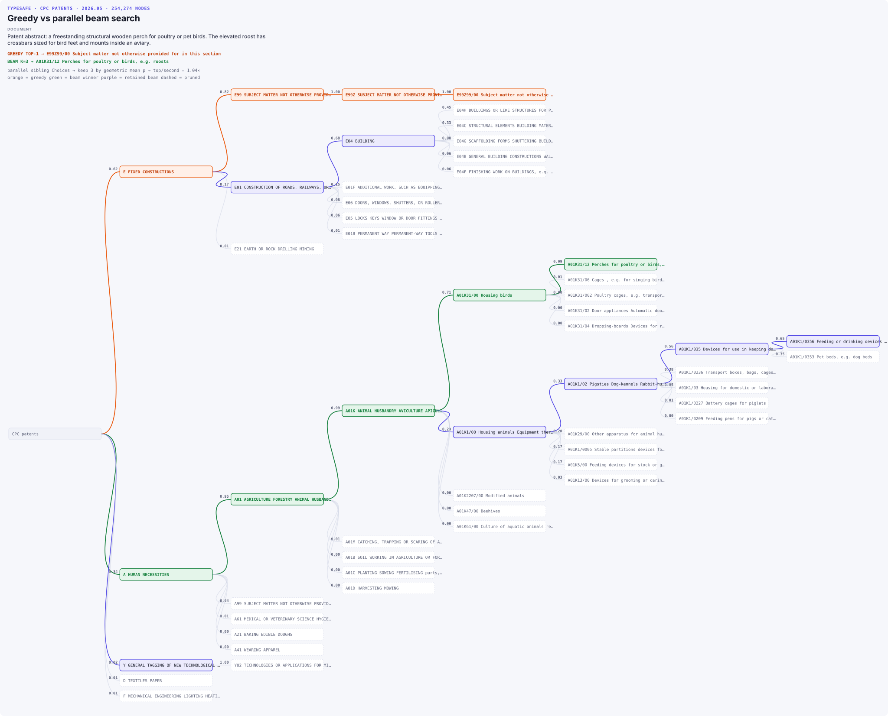
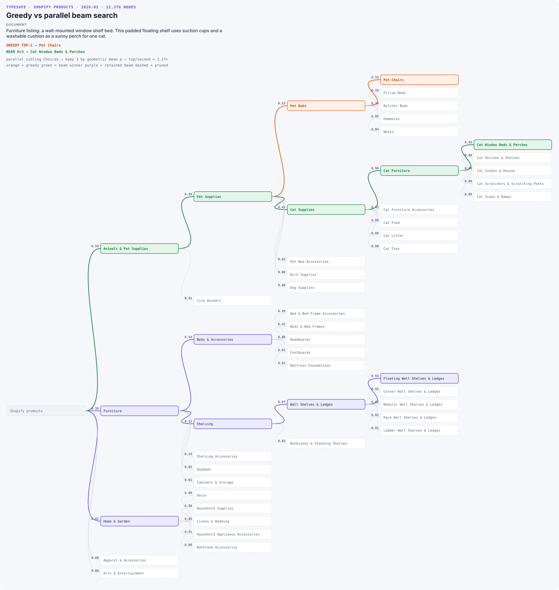
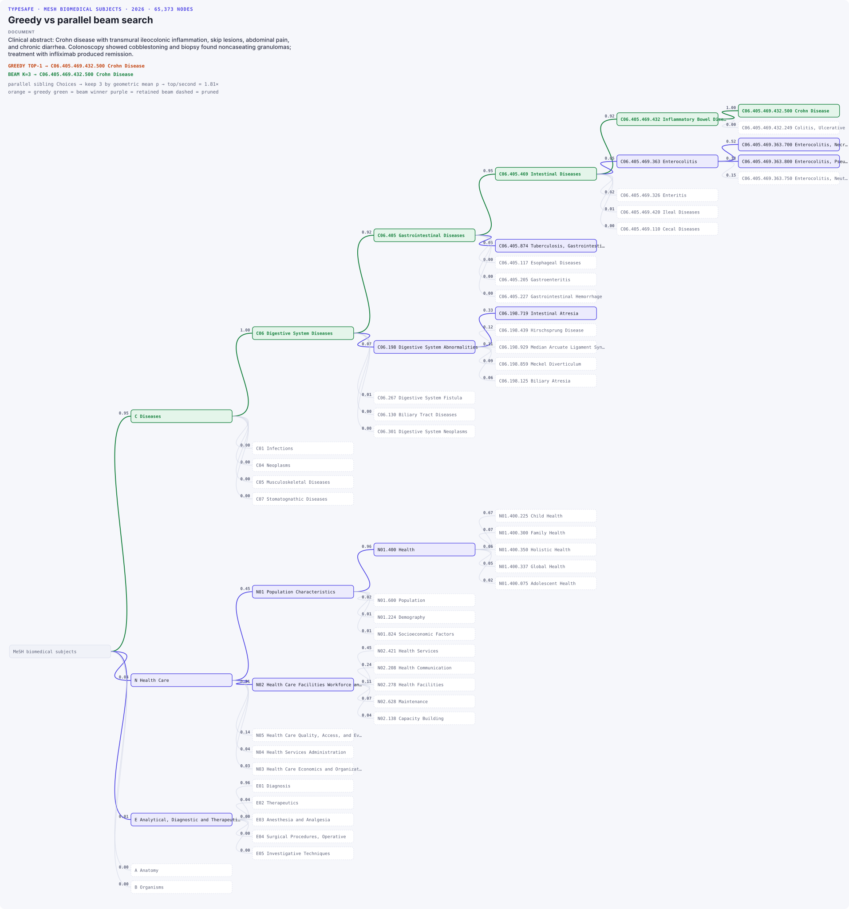
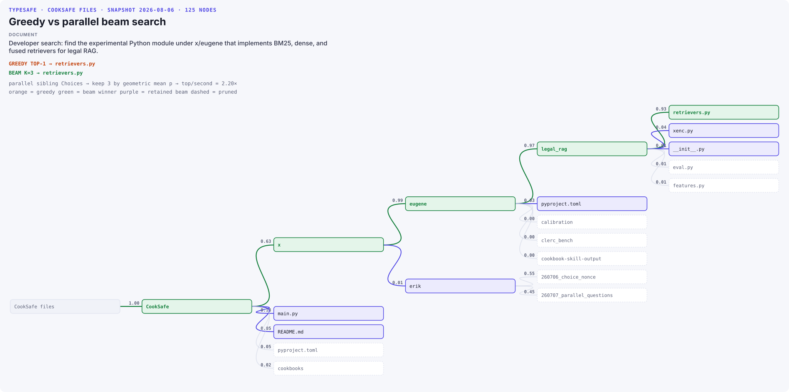

层级分类
通过对 TypeSafe Choice 概率进行并行束搜索，在深层的专利、零售产品、生物医学和源代码层级中对文档进行分类。
大量数据以结构化层级的形态存在，例如分类体系、文件系统层级、网站结构、代码库、组织架构图、生物本体、LLM 技能、内容审核策略等。层级分类的目标是遍历层级直到正确的叶子节点，该叶子节点就是最终的分类结果。这对 typesafe 的 Choice 原语来说是完美契合。我们通过在每个节点（从根开始）对文档进行分类，然后迭代地前往下一个概率最高的节点，直到抵达某个叶子节点（贪心搜索），来找到最可能的叶子。
API 的并行特性还让我们能用并行问题同时探索多条路径，即使用束搜索来提升性能。本实战指南的 TypeSafe API 调用每次同时评估层级的 K 条路径。束搜索按几何平均边概率保留最好的 K 条路径：product(edge_probabilities) ** (1 / decisions)，并剪掉其余的。该概率做了长度归一化，因此浅层和深层叶子可以公平比较。
把问题这样分解成层级结构本身也有其好处：
可观测性
确定你的错误分类最常发生在哪些节点
测量每个节点和每条边被遍历的次数
可测试性
对层级更新进行单元测试，并测量其对分类性能的影响

本实战指南使用的层级
CPC 2026.05: 专利主题内容，从宽泛的技术大类到具体发明。
Shopify 2026-02: 零售产品类别，从商店部门到具体产品类型。
MeSH 2026: 生物医学主题，从宽泛的领域到具体的病症。MeSH 是一个 DAG，因此一个描述符可以出现在多个父节点之下；本演示将其官方树号路径展开。
CookSafe 文件： TypeSafe 实战指南仓库的层级，从文件夹一直搜索到源文件。
方法
贪心搜索： 选择概率最高的子节点，丢弃所有其他选项。早期的错误无法挽回。
束搜索： 保留
K条可能路径，并并行地对每个前沿分类。更深层的证据可以修复早期含糊的决定。几何平均概率最高的那条路径，其叶子即为最终分类。TypeSafe Choice： 每个节点都是一个
Choice问题，其完整的概率分布就是它的各条边。束中的每条路径都作为并行问题运行，因此额外的探索几乎不增加实际耗时。公式：
path_score = product(edge_probabilities) ** (1 / decisions)用于剪枝和比较路径
separation = top_path_score / second_path_score有用的指标，但不用于剪枝
该比率把最高路径的几何平均值与其最接近的对手进行比较。
接近
1×说明含糊比率大意味着区分清晰。
关于指标的说明：
换一种指标，例如
min(top_prob/second_top_prob)，它会针对在每个节点上决定都非常清晰的路径进行优化。对于非常深的层级（例如超过 10 层），用
exp(mean(log(probs)))代替product(edge_probabilities) ** (1 / decisions)，以避免精度误差。
加载并可视化示例层级
这些辅助工具下载固定版本的分类体系源数据，将其解析为直接子节点树，并把每次搜索遍历渲染为静态 SVG。
import html
import os
import shutil
import textwrap
import urllib.request
from collections import defaultdict
from concurrent.futures import ThreadPoolExecutor
from pathlib import Path
from typing import NamedTuple, TypeAlias
from xml.etree import ElementTree
from zipfile import ZipFile
from cooksafe import JsonCache
from IPython.display import Markdown, display
from typesafe_sdk import Choice, RetryPolicy, TypeSafeClient
Tree: TypeAlias = dict[str, "Tree"]
class Hierarchy(NamedTuple):
"""One query and a complete hierarchy.
:param slug: filename-safe taxonomy name.
:param name: display name.
:param version: pinned dataset version.
:param source_url: hierarchy source.
:param node_count: number of loaded hierarchy nodes.
:param document: unstructured text classified by TypeSafe.
:param expected_leaf: expected final classification.
:param tree: nested direct-child menus.
"""
slug: str
name: str
version: str
source_url: str
node_count: int
document: str
expected_leaf: str
tree: Tree
CPC_URL = (
"https://www.cooperativepatentclassification.org/sites/default/files/"
"cpc/bulk/CPCSchemeXML202605.zip"
)
SHOPIFY_URL = (
"https://raw.githubusercontent.com/Shopify/product-taxonomy/"
"v2026-02/dist/en/categories.txt"
)
MESH_URL = "https://nlmpubs.nlm.nih.gov/projects/mesh/MESH_FILES/xmlmesh/desc2026.zip"
MESH_CATEGORIES = {
"A": "Anatomy",
"B": "Organisms",
"C": "Diseases",
"D": "Chemicals and Drugs",
"E": "Analytical, Diagnostic and Therapeutic Techniques, and Equipment",
"F": "Psychiatry and Psychology",
"G": "Phenomena and Processes",
"H": "Disciplines and Occupations",
"I": "Anthropology, Education, Sociology, and Social Phenomena",
"J": "Technology, Industry, and Agriculture",
"K": "Humanities",
"L": "Information Science",
"M": "Named Groups",
"N": "Health Care",
"V": "Publication Characteristics",
"Z": "Geographicals",
}
def _download(url: str, path: Path) -> Path:
"""Download a pinned dataset once.
:param url: official dataset URL.
:param path: local cache path.
:returns: local dataset path.
"""
if path.exists():
return path
path.parent.mkdir(parents=True, exist_ok=True)
temporary_path: Path = path.with_suffix(path.suffix + ".tmp")
request = urllib.request.Request(
url, headers={"User-Agent": "typesafe-taxonomy/1.0"}
)
with urllib.request.urlopen(request, timeout=120) as response:
with temporary_path.open("wb") as file:
shutil.copyfileobj(response, file)
temporary_path.replace(path)
return path
def _insert(tree: Tree, path: tuple[str, ...]) -> None:
subtree_value: Tree = tree
for label in path:
subtree_value = subtree_value.setdefault(label, {})
def _cpc_title(item: ElementTree.Element) -> str:
class_title: ElementTree.Element | None = item.find("class-title")
if class_title is None:
return ""
return " ".join(" ".join(class_title.itertext()).split())
def _load_cpc(path: Path) -> tuple[Tree, int]:
titles: dict[str, str] = {}
levels: dict[str, int] = {}
parent_by_symbol: dict[str, str] = {}
children_by_symbol: defaultdict[str, list[str]] = defaultdict(list)
def visit(item: ElementTree.Element, parent_symbol: str | None) -> None:
symbol: str | None = item.findtext("classification-symbol")
next_parent: str | None = parent_symbol
if symbol:
title: str = _cpc_title(item)
if title:
titles[symbol] = title
levels[symbol] = min(levels.get(symbol, 99), int(item.attrib["level"]))
if (
parent_symbol
and parent_symbol != symbol
and symbol not in parent_by_symbol
):
parent_by_symbol[symbol] = parent_symbol
children_by_symbol[parent_symbol].append(symbol)
next_parent = symbol
for child in item.findall("classification-item"):
visit(child, next_parent)
with ZipFile(path) as zip_file:
names = sorted(
name
for name in zip_file.namelist()
if name.startswith("cpc-scheme-") and name.endswith(".xml")
)
for name in names:
root = ElementTree.fromstring(zip_file.read(name))
for item in root.findall("classification-item"):
visit(item, None)
labels: dict[str, str] = {
symbol: f"{symbol} {titles.get(symbol, '')}".strip() for symbol in levels
}
def build(symbol: str) -> Tree:
return {
labels[child]: build(child) for child in children_by_symbol.get(symbol, [])
}
root_symbols: list[str] = sorted(
symbol for symbol, level in levels.items() if level == 2
)
tree: Tree = {labels[symbol]: build(symbol) for symbol in root_symbols}
return tree, len(labels)
def _load_shopify(path: Path) -> tuple[Tree, int]:
tree: Tree = {}
category_count: int = 0
for line in path.read_text().splitlines():
if not line or line.startswith("#"):
continue
_, path_text = line.split(" : ", maxsplit=1)
category_path: tuple[str, ...] = tuple(path_text.strip().split(" > "))
_insert(tree, category_path)
category_count += 1
return tree, category_count
def _load_mesh(path: Path) -> tuple[Tree, int]:
"""Load every official MeSH tree-number path.
A descriptor may have multiple tree numbers because MeSH is a DAG. Expanding
those positions into paths makes it usable by the tree-oriented beam search.
:param path: MeSH descriptor XML ZIP.
:returns: expanded tree and position count.
"""
with ZipFile(path) as zip_file:
root: ElementTree.Element = ElementTree.fromstring(
zip_file.read("desc2026.xml")
)
names_by_tree_number: dict[str, str] = {
tree_number.text: descriptor_record.findtext("DescriptorName/String", "")
for descriptor_record in root.findall("DescriptorRecord")
for tree_number in descriptor_record.findall("TreeNumberList/TreeNumber")
if tree_number.text
}
tree: Tree = {}
for tree_number in sorted(names_by_tree_number):
parts: list[str] = tree_number.split(".")
prefixes: list[str] = [
".".join(parts[:index]) for index in range(1, len(parts) + 1)
]
category_code: str = tree_number[0]
category_path: tuple[str, ...] = (
f"{category_code} {MESH_CATEGORIES[category_code]}",
*(f"{prefix} {names_by_tree_number[prefix]}" for prefix in prefixes),
)
_insert(tree, category_path)
position_count: int = len(names_by_tree_number) + len(tree)
return tree, position_count
CODEBASE_SNAPSHOT = Path("codebase_files.txt")
def _load_codebase(path: Path) -> tuple[Tree, int]:
"""Load the frozen CookSafe source-file hierarchy.
The listing is a snapshot of the repository's source files in the order a walk found them,
taken when this cookbook was rendered, rather than a walk of whatever tree the cookbook
happens to sit in. A live walk makes the taxonomy -- and every number derived from it --
depend on the reader's checkout, including untracked scratch files, so the shipped cache
stops describing the same tree. Line order is significant: sibling options are asked in the
order they appear here, so it is part of the question, not presentation.
:param path: file holding one repository-relative source path per line.
:returns: nested file tree and node count.
"""
tree: Tree = {}
node_paths: set[tuple[str, ...]] = set()
for line in path.read_text(encoding="utf-8").splitlines():
if not line.strip():
continue
hierarchy_path: tuple[str, ...] = ("CookSafe", *line.split("/"))
_insert(tree, hierarchy_path)
node_paths.update(
hierarchy_path[:index] for index in range(1, len(hierarchy_path) + 1)
)
return tree, len(node_paths)
def load_hierarchies(data_directory: Path = Path("datasets")) -> tuple[Hierarchy, ...]:
"""Load three public taxonomies and one frozen code hierarchy.
:param data_directory: cache directory for official raw files.
:returns: CPC, Shopify, MeSH, and CookSafe examples.
"""
cpc_tree, cpc_nodes = _load_cpc(
_download(CPC_URL, data_directory / "CPCSchemeXML202605.zip")
)
shopify_tree, shopify_nodes = _load_shopify(
_download(SHOPIFY_URL, data_directory / "shopify_categories_2026-02.txt")
)
mesh_tree, mesh_nodes = _load_mesh(
_download(MESH_URL, data_directory / "mesh_descriptors_2026.zip")
)
codebase_tree, codebase_nodes = _load_codebase(CODEBASE_SNAPSHOT)
return (
Hierarchy(
slug="cpc",
name="CPC patents",
version="2026.05",
source_url=CPC_URL,
node_count=cpc_nodes,
document=(
"Patent abstract: a freestanding structural wooden perch for poultry or "
"pet birds. The elevated roost has crossbars sized for bird feet and mounts "
"inside an aviary."
),
expected_leaf="A01K31/12 Perches for poultry or birds, e.g. roosts",
tree=cpc_tree,
),
Hierarchy(
slug="shopify",
name="Shopify products",
version="2026-02",
source_url=SHOPIFY_URL,
node_count=shopify_nodes,
document=(
"Furniture listing: a wall-mounted window shelf bed. This padded floating shelf "
"uses suction cups and a washable cushion as a sunny perch for one cat."
),
expected_leaf="Cat Window Beds & Perches",
tree=shopify_tree,
),
Hierarchy(
slug="mesh",
name="MeSH biomedical subjects",
version="2026",
source_url=MESH_URL,
node_count=mesh_nodes,
document=(
"Clinical abstract: Crohn disease with transmural ileocolonic inflammation, "
"skip lesions, abdominal pain, and chronic diarrhea. Colonoscopy showed "
"cobblestoning and biopsy found noncaseating granulomas; treatment with "
"infliximab produced remission."
),
expected_leaf="C06.405.469.432.500 Crohn Disease",
tree=mesh_tree,
),
Hierarchy(
slug="codebase",
name="CookSafe files",
version="snapshot 2026-08-06",
source_url=str(CODEBASE_SNAPSHOT),
node_count=codebase_nodes,
document=(
"Developer search: find the experimental Python module under x/eugene that "
"implements BM25, dense, and fused retrievers for legal RAG."
),
expected_leaf="retrievers.py",
tree=codebase_tree,
),
)
NODE_W, NODE_H = 300, 38
COL_W, ROW_H = 360, 50
PAD_X = 28
EDGE_TOP_K = 5
def subtree(tree: Tree, path: tuple[str, ...]) -> Tree:
"""Return the direct-child menu below ``path``.
:param tree: taxonomy root.
:param path: path from the taxonomy root.
:returns: child mapping at the path.
"""
subtree_value: Tree = tree
for label in path:
subtree_value = subtree_value[label]
return subtree_value
def _escape(value: object) -> str:
return html.escape(str(value), quote=True)
def _truncate(value: str, length: int = 33) -> str:
return value if len(value) <= length else value[: length - 1] + "…"
def _build_nodes(hierarchy: Hierarchy, result: dict) -> dict:
records: dict[tuple[str, ...], dict] = {
tuple(record["parent"]): record for record in result["records"]
}
best_path: tuple[str, ...] = tuple(result["beam"][0]["path"])
greedy_path: tuple[str, ...] = tuple(result["greedy"]["path"])
retained: set[tuple[str, ...]] = {tuple(path) for path in result["retained_paths"]}
def grow(path: tuple[str, ...]) -> list[dict]:
record: dict | None = records.get(path)
if record is None:
return []
children: list[dict] = []
probabilities: dict[str, float] = record["probabilities"]
ranked: list[tuple[str, float]] = sorted(
probabilities.items(), key=lambda item: item[1], reverse=True
)
shown_labels: set[str] = {label for label, _ in ranked[:EDGE_TOP_K]}
shown_labels.update(
label
for label, _ in ranked
if path + (label,) in retained
or path + (label,) == best_path[: len(path) + 1]
or path + (label,) == greedy_path[: len(path) + 1]
)
for label, probability in ranked:
if label not in shown_labels:
continue
child_path: tuple[str, ...] = path + (label,)
on_best_path: bool = child_path == best_path[: len(child_path)]
on_greedy_path: bool = child_path == greedy_path[: len(child_path)]
kind: str = (
"winner"
if on_best_path
else "greedy"
if on_greedy_path
else "beam"
if child_path in retained
else "alt"
)
children.append(
{
"label": label,
"probability": probability,
"kind": kind,
"children": grow(child_path),
}
)
return children
return {
"label": hierarchy.name,
"probability": None,
"kind": "root",
"children": grow(()),
}
def _layout(root: dict) -> tuple[int, int]:
rows: list[int] = [0]
maximum_depth: list[int] = [0]
def walk(node: dict, depth: int) -> None:
node["depth"] = depth
maximum_depth[0] = max(maximum_depth[0], depth)
if node["children"]:
for child in node["children"]:
walk(child, depth + 1)
node["row"] = (node["children"][0]["row"] + node["children"][-1]["row"]) / 2
else:
node["row"] = rows[0]
rows[0] += 1
walk(root, 0)
return maximum_depth[0], rows[0]
def render_svg(hierarchy: Hierarchy, result: dict, path: Path) -> None:
"""Write a standalone traversal SVG matching the Customer_ProdX visual language.
:param hierarchy: taxonomy demonstration.
:param result: beam-search result from the notebook.
:param path: output SVG path.
"""
root: dict = _build_nodes(hierarchy, result)
maximum_depth, row_count = _layout(root)
document_lines: list[str] = textwrap.wrap(
hierarchy.document,
width=105,
break_long_words=False,
break_on_hyphens=False,
) or [""]
document_y: int = 124
greedy_y: int = document_y + (len(document_lines) - 1) * 21 + 34
beam_y: int = greedy_y + 25
method_y: int = beam_y + 29
legend_y: int = method_y + 23
header_height: int = legend_y + 32
width: int = PAD_X * 2 + maximum_depth * COL_W + NODE_W
height: int = header_height + max(row_count, 1) * ROW_H + 34
edges: list[str] = []
nodes: list[str] = []
def node_x(node: dict) -> float:
return PAD_X + node["depth"] * COL_W
def node_y(node: dict) -> float:
return header_height + node["row"] * ROW_H
def walk(node: dict) -> None:
x_value, y_value = node_x(node), node_y(node)
for child in node["children"]:
child_x, child_y = node_x(child), node_y(child)
x1, y1 = x_value + NODE_W, y_value + NODE_H / 2
x2, y2 = child_x, child_y + NODE_H / 2
bend: float = COL_W * 0.38
edges.append(
f'<path class="edge {child["kind"]}" '
f'd="M{x1:.0f},{y1:.0f} C{x1 + bend:.0f},{y1:.0f} '
f'{x2 - bend:.0f},{y2:.0f} {x2:.0f},{y2:.0f}"/>'
)
edges.append(
f'<text class="prob" x="{x2 - 7:.0f}" y="{y2 - 5:.0f}" '
f'text-anchor="end">{child["probability"]:.2f}</text>'
)
walk(child)
kind: str = node["kind"]
label: str = _truncate(node["label"], 40)
nodes.append(
f'<g class="node {kind}"><title>{_escape(node["label"])}</title>'
f'<rect x="{x_value:.0f}" y="{y_value:.0f}" width="{NODE_W}" '
f'height="{NODE_H}" rx="7"/>'
f'<text x="{x_value + 11:.0f}" y="{y_value + 24:.0f}">'
f"{_escape(label)}</text></g>"
)
walk(root)
best: dict = result["beam"][0]
best_path: tuple[str, ...] = tuple(best["path"])
greedy_path: tuple[str, ...] = tuple(result["greedy"]["path"])
beam_leaf: str = best_path[-1] if best_path else "no leaf"
greedy_leaf: str = greedy_path[-1] if greedy_path else "no leaf"
beam_width: int = result["beam_width"]
separation_ratio: float = result["separation_ratio"]
document_text: str = "".join(
f'<text class="document" x="24" y="{document_y + index * 21}">'
f"{_escape(line)}</text>"
for index, line in enumerate(document_lines)
)
separation_text: str = (
">999×" if separation_ratio > 999 else f"{separation_ratio:.2f}×"
)
svg: str = f'''<svg xmlns="http://www.w3.org/2000/svg" viewBox="0 0 {width} {height}"
width="{width}" height="{height}" role="img" aria-label="{_escape(hierarchy.name)} taxonomy beam search">
<style>
.bg {{ fill:#f6f7fb }}
text {{ font-family:ui-monospace,"SF Mono",Menlo,Consolas,monospace }}
.eyebrow {{ font-size:14px; font-weight:700; letter-spacing:1.2px; fill:#4f46e5 }}
.title {{ font:700 28px system-ui,-apple-system,"Segoe UI",sans-serif; fill:#181b28 }}
.document-label {{ font:700 12px system-ui,-apple-system,"Segoe UI",sans-serif; letter-spacing:1px; fill:#777c91 }}
.document {{ font:500 17px system-ui,-apple-system,"Segoe UI",sans-serif; fill:#303449 }}
.copy {{ font-size:14px; fill:#5c6178 }}
.result {{ font-size:14px; font-weight:700 }}
.greedy-result {{ fill:#c2410c }}
.beam-result {{ fill:#15803d }}
.edge {{ fill:none; stroke:#c9cee0; stroke-width:2 }}
.edge.winner {{ stroke:#15803d; stroke-width:2.5 }}
.edge.greedy {{ stroke:#ea580c; stroke-width:2.5 }}
.edge.beam {{ stroke:#4f46e5; stroke-width:2.2 }}
.edge.alt {{ opacity:.48 }}
.prob {{ font-size:12px; font-weight:600; fill:#5c6178 }}
.node rect {{ stroke-width:1.7 }}
.node text {{ font-size:13px }}
.node.root rect {{ fill:#f0f2f8; stroke:#e2e5f0 }}
.node.root text {{ fill:#5c6178 }}
.node.winner rect {{ fill:#e4f5ea; stroke:#15803d }}
.node.winner text {{ fill:#15803d; font-weight:700 }}
.node.greedy rect {{ fill:#fff0e8; stroke:#ea580c }}
.node.greedy text {{ fill:#c2410c; font-weight:700 }}
.node.beam rect {{ fill:#ecebfd; stroke:#4f46e5 }}
.node.beam text {{ fill:#181b28 }}
.node.alt rect {{ fill:#fff; stroke:#e2e5f0; stroke-dasharray:3 3 }}
.node.alt text {{ fill:#5c6178 }}
</style>
<rect class="bg" width="{width}" height="{height}" rx="14"/>
<text class="eyebrow" x="24" y="32">TYPESAFE · {hierarchy.name.upper()} · {hierarchy.version.upper()} · {hierarchy.node_count:,} NODES</text>
<text class="title" x="24" y="69">Greedy vs parallel beam search</text>
<text class="document-label" x="24" y="99">DOCUMENT</text>
{document_text}
<text class="result greedy-result" x="24" y="{greedy_y}">GREEDY TOP-1 → {_escape(_truncate(greedy_leaf, 105))}</text>
<text class="result beam-result" x="24" y="{beam_y}">BEAM K={beam_width} → {_escape(_truncate(beam_leaf, 105))}</text>
<text class="copy" x="24" y="{method_y}">parallel sibling Choices → keep {beam_width} by geometric mean p → top/second = {separation_text}</text>
<text class="copy" x="24" y="{legend_y}">orange = greedy green = beam winner purple = retained beam dashed = pruned</text>
{"".join(edges)}{"".join(nodes)}
</svg>'''
path.write_text(svg)实现贪心搜索与束搜索
每个兄弟集合在下一节中都成为一个 Choice 问题；该节还实现了两种遍历策略，并保留了静态图所需的概率。
HIERARCHIES = load_hierarchies()
MODEL, BEAM_WIDTH, MAX_DEPTH, EPSILON = "jev-1.12", 3, 12, 1e-9
client = TypeSafeClient(
api_key=os.environ["TYPESAFE_API_KEY"],
retry=RetryPolicy(max_retries=5, backoff_initial=1.0, backoff_max=20.0),
)
json_cache = JsonCache(Path("json_cache.json"))
@json_cache
def choose(state: str, labels: tuple[str, ...]) -> dict[str, float]:
"""Ask one atomic direct-child question and return its distribution."""
if len(labels) == 1:
return {labels[0]: 1.0}
question, keys = child_question(labels)
response = client.system_one(
state=state, questions={"child": question}, model=MODEL
)
probabilities = response.answers["child"].probabilities
return {label: probabilities[key] for key, label in keys.items()}
def child_question(labels: tuple[str, ...]) -> tuple[Choice, dict[str, str]]:
"""Build the direct-child Choice and its reversible option mapping."""
keys = {f"c{i}": label for i, label in enumerate(labels)}
question = Choice(
instructions="Which direct child category best matches this document?",
criteria=keys,
)
return question, keys
def extend_candidate(
candidate: dict, label: str, probabilities: dict[str, float]
) -> dict:
"""Append one edge and recompute its geometric-mean path score."""
is_decision: bool = len(probabilities) > 1
# Use log space for very deep trees to avoid floating-point precision loss.
probability_product: float = candidate["probability_product"] * (
max(probabilities[label], EPSILON) if is_decision else 1.0
)
decision_count: int = candidate["decision_count"] + is_decision
return {
"path": candidate["path"] + (label,),
"probability_product": probability_product,
"decision_count": decision_count,
"score": probability_product ** (1 / decision_count) if decision_count else 1.0,
}
def choice_record(path: tuple[str, ...], probabilities: dict[str, float]) -> dict:
"""Package one sibling decision for the traversal diagram."""
return {"parent": path, "probabilities": probabilities}
def beam_search(hierarchy: Hierarchy) -> dict:
"""Parallel width-three beam search using geometric-mean probability."""
beam = [{"path": (), "probability_product": 1.0, "decision_count": 0, "score": 1.0}]
records, retained_paths = [], {()}
for _ in range(MAX_DEPTH):
expandable = [
candidate
for candidate in beam
if subtree(hierarchy.tree, candidate["path"])
]
finished = [
candidate
for candidate in beam
if not subtree(hierarchy.tree, candidate["path"])
]
if not expandable:
break
with ThreadPoolExecutor(max_workers=BEAM_WIDTH) as executor:
distributions = list(
executor.map(
lambda candidate: choose(
hierarchy.document,
tuple(subtree(hierarchy.tree, candidate["path"])),
),
expandable,
)
)
expanded = []
round_records = []
for candidate, probabilities in zip(expandable, distributions, strict=True):
round_records.append(choice_record(candidate["path"], probabilities))
candidate_expanded = []
for label in probabilities:
candidate_expanded.append(
extend_candidate(candidate, label, probabilities)
)
expanded.extend(candidate_expanded)
beam = sorted(
finished + expanded,
key=lambda candidate: candidate["score"],
reverse=True,
)[:BEAM_WIDTH]
retained_paths.update(candidate["path"] for candidate in beam)
records.extend(round_records)
beam = sorted(beam, key=lambda candidate: candidate["score"], reverse=True)
return {
"beam": beam,
"records": records,
"retained_paths": sorted(retained_paths, key=lambda path: (len(path), path)),
}
def greedy_search(hierarchy: Hierarchy) -> dict:
"""Follow only the locally highest-probability child."""
path, probability_product, decision_count, records = (), 1.0, 0, []
for _ in range(MAX_DEPTH):
labels = tuple(subtree(hierarchy.tree, path))
if not labels:
break
probabilities = choose(hierarchy.document, labels)
records.append(choice_record(path, probabilities))
label = max(probabilities, key=probabilities.get)
if len(probabilities) > 1:
probability_product *= max(probabilities[label], EPSILON)
decision_count += 1
path += (label,)
score: float = (
probability_product ** (1 / decision_count) if decision_count else 1.0
)
return {"path": path, "score": score, "records": records}
def compare_searches(hierarchy: Hierarchy) -> dict:
"""Run beam and greedy, then merge their queried nodes for rendering."""
result = beam_search(hierarchy)
greedy = greedy_search(hierarchy)
recorded_paths = {tuple(record["parent"]) for record in result["records"]}
result["records"].extend(
record
for record in greedy["records"]
if tuple(record["parent"]) not in recorded_paths
)
result["greedy"] = greedy
result["beam_width"] = BEAM_WIDTH
top_score: float = result["beam"][0]["score"]
second_score: float = result["beam"][1]["score"]
result["separation_ratio"] = top_score / max(second_score, EPSILON)
return result比较各种方法
在四个带标签的示例上运行两种策略，把它们的叶子与预期分类进行比较，并可视化它们探索的路线。
with ThreadPoolExecutor(max_workers=len(HIERARCHIES)) as executor:
results = list(executor.map(compare_searches, HIERARCHIES))
rows: list[dict[str, str | int | bool]] = []
for hierarchy, result in zip(HIERARCHIES, results, strict=True):
svg_path: Path = Path(f"{hierarchy.slug}_tree.svg")
render_svg(hierarchy, result, svg_path)
beam_path: tuple[str, ...] = tuple(result["beam"][0]["path"])
greedy_path: tuple[str, ...] = tuple(result["greedy"]["path"])
beam_leaf: str = beam_path[-1]
greedy_leaf: str = greedy_path[-1]
rows.append(
{
"hierarchy": hierarchy.name,
"nodes": hierarchy.node_count,
"expected leaf": hierarchy.expected_leaf,
"greedy leaf": greedy_leaf,
"beam K=3 leaf": beam_leaf,
"greedy correct": greedy_leaf == hierarchy.expected_leaf,
"beam correct": beam_leaf == hierarchy.expected_leaf,
"mean p": f"{result['beam'][0]['score']:.2f}",
"top/second": f"{result['separation_ratio']:.2f}×",
}
)
greedy_correct_count: int = sum(bool(row["greedy correct"]) for row in rows)
beam_correct_count: int = sum(bool(row["beam correct"]) for row in rows)
recovered_names: str = ", ".join(
str(row["hierarchy"])
for row in rows
if not row["greedy correct"] and row["beam correct"]
)
table_lines: list[str] = [
"| Hierarchy | Expected leaf | Greedy leaf | Beam K=3 leaf | Greedy correct | Beam correct |",
"| --- | --- | --- | --- | --- | --- |",
]
table_lines.extend(
"| "
+ " | ".join(
(
str(row["hierarchy"]),
str(row["expected leaf"]),
str(row["greedy leaf"]),
str(row["beam K=3 leaf"]),
"yes" if row["greedy correct"] else "no",
"yes" if row["beam correct"] else "no",
)
)
+ " |"
for row in rows
)
display(
Markdown(
"## Results\n\n"
"Each example has a known expected leaf. "
f"Beam search matched {beam_correct_count} of {len(rows)} expected leaves; "
f"greedy search matched {greedy_correct_count} of {len(rows)}. "
f"Keeping three paths recovered the expected classification for {recovered_names}.\n\n"
+ "\n".join(table_lines)
+ "\n\nThe diagrams show why the methods differ. Orange marks the greedy route, "
"green marks the winning beam route, purple marks other retained paths, and "
"dashed edges were pruned.\n\n"
+ "\n\n".join(
f"### {hierarchy.name}\n\n"
for hierarchy in HIERARCHIES
)
)
)结果
每个示例都有一个已知的预期叶子。束搜索匹配了 4 个预期叶子中的 4 个；贪心搜索匹配了 4 个中的 2 个。保留三条路径为 CPC patents、Shopify products 找回了预期分类。
| Hierarchy | Expected leaf | Greedy leaf | Beam K=3 leaf | Greedy correct | Beam correct |
|---|---|---|---|---|---|
| CPC patents | A01K31/12 Perches for poultry or birds, e.g. roosts | E99Z99/00 Subject matter not otherwise provided for in this section | A01K31/12 Perches for poultry or birds, e.g. roosts | no | yes |
| Shopify products | Cat Window Beds & Perches | Pet Chairs | Cat Window Beds & Perches | no | yes |
| MeSH biomedical subjects | C06.405.469.432.500 Crohn Disease | C06.405.469.432.500 Crohn Disease | C06.405.469.432.500 Crohn Disease | yes | yes |
| CookSafe files | retrievers.py | retrievers.py | retrievers.py | yes | yes |
这些图解释了两种方法为何不同。橙色标记贪心路线，绿色标记胜出的束搜索路线，紫色标记其他被保留的路径，虚线边是被剪枝的。
CPC 专利

Shopify 产品

MeSH 生物医学主题

CookSafe 文件
